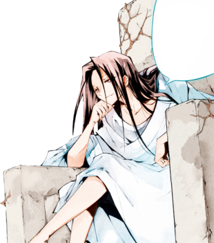

Хао Асакура[3] (葉王 麻倉, Hao Asakura), Маппа Додзи[4] (麻叶 童子, Douji Mappa), Асаха Додзи[4] (麻葉 童子, Douji Asaha), с третей жизни известен просто как Хао (ハオ) — является действующим Королём Шаманов, одним из могущественных богов G8 и лидером одной из сильнейших команд Битвы Шаманов, Хоси-гуми.